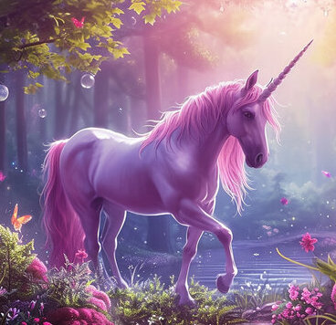

Unicorns and where to find them
A thorough guide to all the known sightings of unicorns until this
day
The unicorn is a legendary creature that has been described since
antiquity as a beast with a single large, pointed, spiraling horn
projecting from its forehead. In European literature and art, the
unicorn has for the last thousand years or so been depicted as a
white horse- or goat-like animal with a long straight horn with
spiralling grooves, cloven hooves, and sometimes a goat's beard. In
the Middle Ages and Renaissance, it was commonly described as an
extremely wild woodland creature, a symbol of purity and grace,
which could be captured only by a virgin. In encyclopedias, its horn
was described as having the power to render poisoned water potable
and to heal sickness. In medieval and Renaissance times, the tusk of
the narwhal was sometimes sold as a unicorn horn. A bovine type of
unicorn is thought by some scholars to have been depicted in seals
of the Bronze Age Indus Valley civilization, the interpretation
remaining controversial. An equine form of the unicorn was mentioned
by the ancient Greeks in accounts of natural history by various
writers, including Ctesias, Strabo, Pliny the Younger, Aelian, and
Cosmas Indicopleustes. The Bible also describes an animal, the
re'em, which some translations render as unicorn. The unicorn
continues to hold a place in popular culture. It is often used as a
symbol of fantasy or rarity.